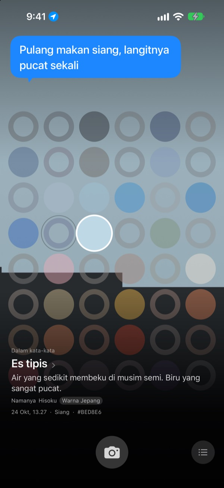
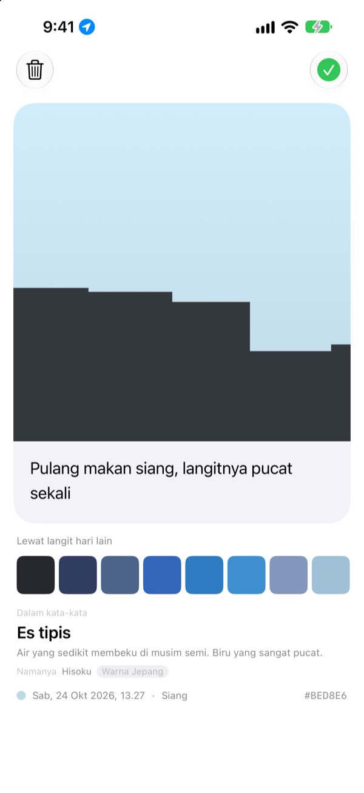
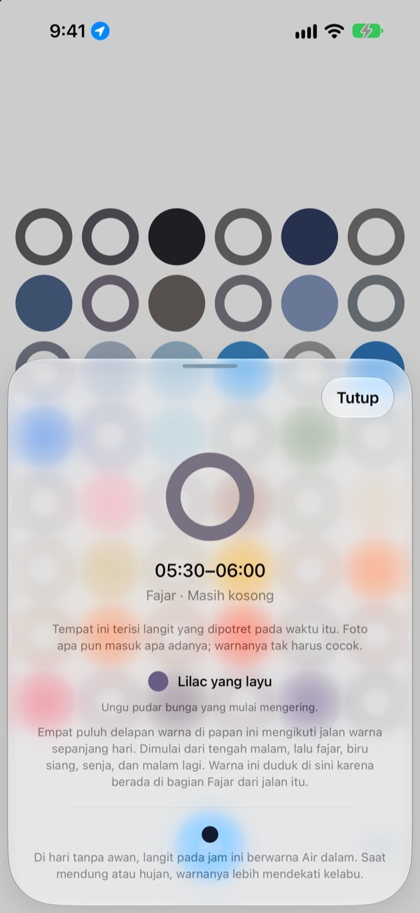
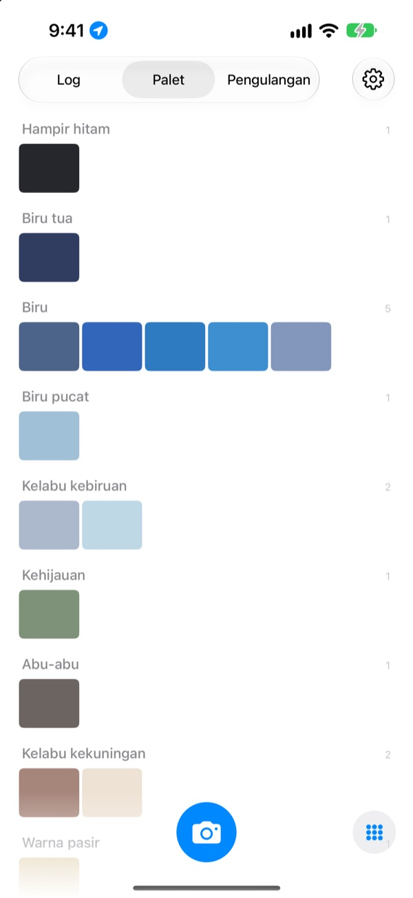

Hari ini langit
berwarna apa?
Potret langit, dan di papan empat puluh delapan kotak, kotak untuk jam itu terisi warna yang kamu tangkap. Warnanya juga mendapat nama yang mudah dibayangkan, seperti es tipis, ubin kolam renang, atau kesemek matang.
Gratis. Tanpa akun, tanpa login.

Coba ketuk papannya
Ketuk sebuah kotak untuk melihat langit jam berapa yang diwakilinya. Tambahkan foto langit untuk mengisi kotak jam sekarang, lalu majukan harinya dan lihat bagaimana papan berubah.
Kamu melihat langit setiap hari, tapi tak ingat satu warna pun
Langit yang kamu tengok di jalan menuju kantor, langit saat keluar selepas makan siang: menjelang malam, warnanya sudah hilang dari ingatan. Foto langit yang sempat kamu ambil pun tenggelam di antara foto-foto lain di galeri. SkyDex mengumpulkan foto langit sebagai warna, lalu menata jejak langit hari ini dalam satu papan.
Setiap langit punya nama
Warna yang kamu potret lebih dulu mendapat nama yang langsung terbayang, seperti es tipis, ubin kolam renang, atau kesemek matang. Di bawahnya menyusul nama yang punya asal-usul, dari warna Korea, warna Jepang, pigmen, atau warna web.
Kalau cukup dekat, tertulis “Namanya”; kalau masih jauh, aplikasi jujur menulis “Nama terdekat”.

Tinggalkan satu baris
Begitu selesai memotret, sebuah kartu langsung terbuka. Tulis satu baris tentang apa yang kamu pikirkan saat menatap langit itu, dan tulisan itu muncul lagi di atas langit setiap kali kamu mengetuk kotaknya di papan.
Kamu juga bisa memakaikan warna langit dari hari lain ke langit di foto ini, lalu membagikannya sebagai gambar.

Kotak kosong jadi penunjuk jalan
Ketuk kotak kosong untuk tahu kotak itu mewakili jam berapa dan warna apa yang perlu dicari. Untuk hari tanpa awan, aplikasi juga memberi tahu warna langit pada jam itu, disesuaikan dengan waktu matahari terbit dan terbenam di tempatmu.
Warnanya tidak harus cocok. Abu-abu di hari mendung juga warna langit hari itu.

Log, Palet, Pengulangan
Lihat langit yang kamu potret menurut urutan waktu, dan kumpulkan warnanya ke dalam palet per kelompok seperti biru, abu-abu, dan warna pasir. Potret langit di jam yang sama pada hari lain, dan keduanya akan berdiri berdampingan.
Widget di Layar Utama menampilkan Papan Hari Ini dan Langit Hari Ini sekilas.

Mulai dalam tiga langkah
- 1
Tengadah ke langit
Ketuk tombol kamera di bawah papan, lalu potret sampai langit memenuhi kotak persegi.
- 2
Kotak terisi
Kotak untuk jam sekarang terisi warna yang kamu tangkap dan mendapat nama.
- 3
Tulis satu baris
Di kartu yang terbuka, tulis apa yang kamu pikirkan saat menatap langit itu.
Begini papan membagi hari
- Tengah malam · 00.00–05.00
- enam kotak
- Fajar · 05.00–08.00
- enam kotak
- Siang · 08.00–16.00
- dua belas kotak
- Sore · 16.00–18.00
- enam kotak
- Senja · 18.00–21.00
- dua belas kotak, satu tiap 15 menit
- Malam · 21.00–24.00
- enam kotak
Di sekitar senja, saat langit cepat berubah, kotaknya rapat; di tengah malam, saat langit nyaris tak bergerak, kotaknya renggang. Bagian atas papan adalah tengah malam, dan hari mengalir ke bawah.
Pertanyaan umum
Bagaimana kotak terisi?
Langit yang kamu potret hari ini mengisi kotak untuk jam pemotretannya. Meski warnanya tidak seperti yang kamu duga, foto tetap masuk apa adanya, karena memang begitulah langit pada jam itu. Langit yang kamu kumpulkan di hari-hari sebelumnya masuk berdasarkan warna: jika cukup dekat dengan warna sebuah kotak, ia mengisi kotak itu, dan satu langit hanya mengisi satu kotak.
Kotak yang kemarin penuh, hari ini kosong.
Papan ini adalah hari ini. Kotak yang kemarin diisi langit berdasarkan jamnya akan dicocokkan ulang hanya berdasarkan warna begitu hari berganti. Karena itu, ada hari ketika papan hampir penuh dan ada hari ketika papan terlihat kosong. Fotomu tidak hilang: semua langit tetap ada di Log, dan menurut urutan warna di Palet.
Kotak yang sudah terisi makin pudar.
Memang disengaja. Foto mempertahankan warna aslinya selama seminggu, lalu memudar perlahan selama delapan minggu berikutnya. Foto tidak dihapus dan tidak pernah pudar sepenuhnya. Potret lagi langit di jam itu, dan kotaknya langsung kembali ke warna aslinya. Tidak ada rentetan hari yang terputus, tidak ada angka yang harus dikejar kembali.
Apakah warnanya harus cocok?
Tidak. Tidak ada lulus atau gagal. Setiap foto pasti tersimpan, dan abu-abu di hari mendung juga warna langit hari itu.
Kenapa aplikasi meminta lokasi?
Hanya untuk memberi tahu, saat kamu mengetuk kotak kosong, warna langit tanpa awan pada jam itu, disesuaikan dengan waktu matahari terbit dan terbenam di tempatmu. Yang dipakai hanya lokasi perkiraan dalam skala kilometer, dan koordinat tidak pernah ditempelkan ke foto. Kalau kamu menolak, aplikasi tetap berjalan seperti biasa dengan Seoul sebagai acuan.
Bisakah aku menambahkan langit dari galeri foto?
Bisa. Langit yang kamu pilih dari aplikasi Foto, bukan dari kamera, juga dipotong menjadi persegi dan mengisi kotak jam sekarang, sama seperti langit yang baru dipotret.
Bagaimana cara menghapus foto?
Buka fotonya lalu ketuk Hapus, atau geser ke kiri di Log. Foto terhapus dari perangkat dan iCloud sekaligus. Menghapus aplikasi tidak menghapus salinan di iCloud, jadi langitmu kembali saat aplikasi dipasang ulang.
Bagaimana kalau aku ganti ponsel?
Langitmu tersimpan di iCloud milikmu sendiri, jadi berlanjut di perangkat baru yang masuk dengan Akun Apple yang sama. Tidak ada akun aplikasi, tidak ada server, dan foto serta warnamu tidak pernah dikirim ke pengembang. Tanpa iklan, tanpa pelacakan.
Benar-benar gratis?
Ya, semua fitur gratis. Kalau suka, kamu bisa memberi tip kepada pengembang dari dalam aplikasi, tapi tip tidak membuka fitur apa pun.
Bisa dipakai di perangkat apa?
iPhone dengan iOS 17.0 atau yang lebih baru, hanya dalam posisi tegak.
Menemukan bug, perilaku aneh, atau ada yang ingin kamu sampaikan? Kirim ke leeo@kakao.com. Ceritakan apa yang sedang kamu lakukan dan versi iOS-mu, supaya masalahnya jauh lebih mudah ditemukan.